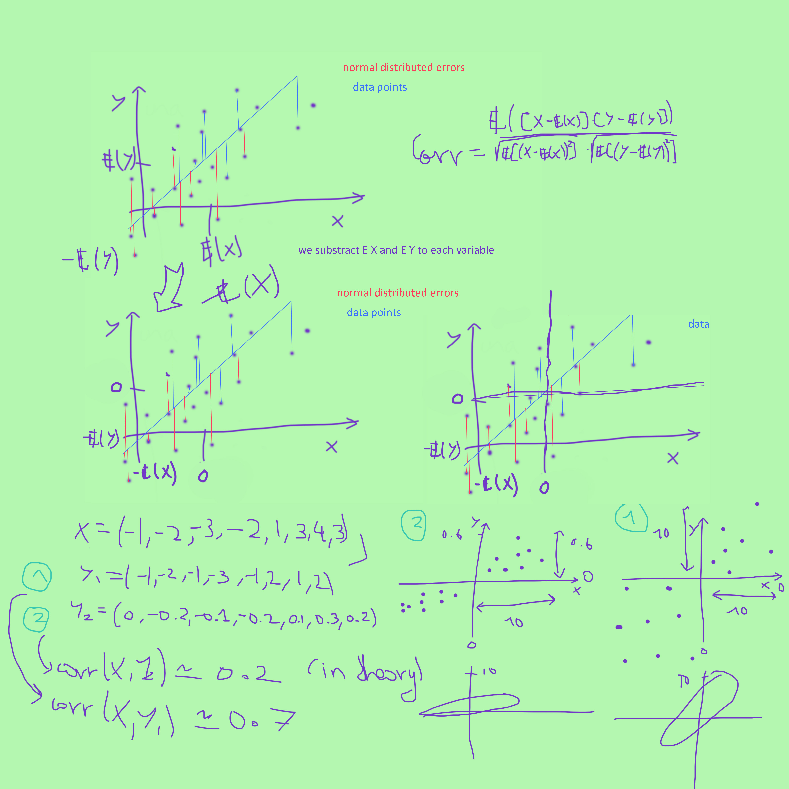

We provide here a few of the notes of Mr. Romà Masana Domènech
about Mathematics. In particular about statistics, discrete mathematics, cryptology and
some algorithms that conform what we call now machine learning. Today I started it,
it is 10th of January 2021
-
The correlation
The correlation
A picture on what I think about correlation. I prefer to explain with images than with formulas.
The main idea I am trying to clarify here is why when the cloud of points is tilted upwards the correlation is closer to 1,
than when the cloud of points seems to be closer to horizontal.
